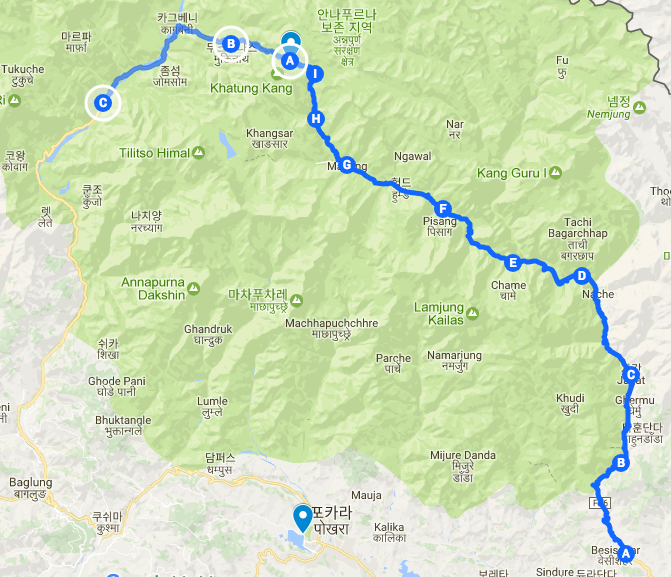
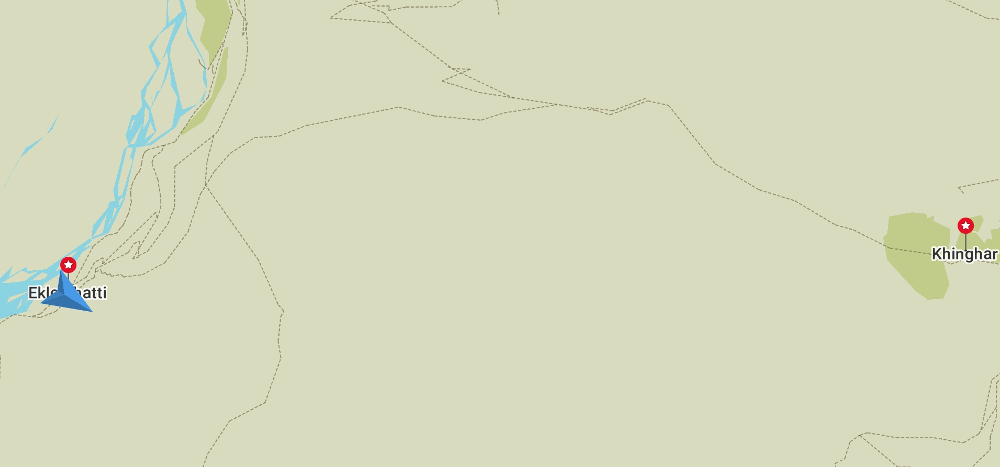
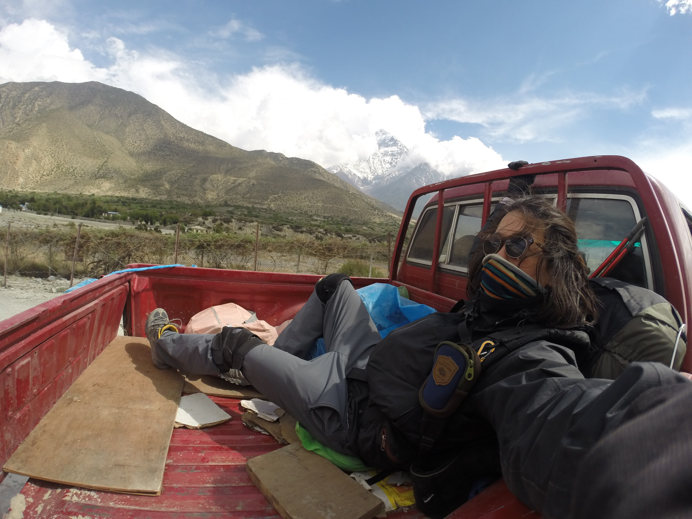

두려워 하지 말고 지금 가진 물을 마실것
2017년 04월 22일
여행 D+19, 안나푸르나 D+11
오늘 이동한 경로 (B) -> (C) (총 25km)
도보(14km) 히치하이킹(5km) 버스(6km)
Muktinath(3800) -> Eklebhatti(2740) -> Jomsom(2720) -> Marpha(2670)

하산 시작
이번 트레킹 기간 통틀어서 가장 숙면한 날이다. 어제 무척 피곤하기도 했고 숙소가 롯지 수준이아니라 일반 호스텔 수준이었다. 이 트레킹 구간에서 대부분 트레커들은 아침에 항상 6시에 일어나고 7시에 아침식사를 한뒤 8시에 다음목적지로 출발하는 678 을 지킨다. 근데 이 시스템?이 무적 좋은것 같다. 나중에 한국에서도 이렇게 살면 여행자의 삶 같은느낌이 들것 같다.
쏘롱라 패스를 넘고 묵티나트에 도착한 어제부터 트레킹이 다 끝난것 같은 느낌이 들었다. 아직도 절반 남았는데 말이다. 어제 태어나서 제일 힘든 경험을 해서 그런가? 트레킹의 가장 큰 고비를 무사히 넘겨서 그런걸까? 오늘은 본격적으로 집으로 돌아가는 하산 길이다. 오늘부터 새로운 모험 시작이다. 매일 아침마다 새로운 모험이 기다리는 이 느낌이 너무 좋다. 오늘부터는 여유롭게 트레킹할 것이다.
많은 사람들이 나보고 9개월 뒤 여행을 마치고 한국으로 돌아갔을때 다시 나오고 싶어서 근질근질할거라고 말했다. 과연 그럴까 싶지만, 어쩌면 4년전 남미여행이 나를 다시 이 여행으로 이끌었는지도 모른다는 생각이 들었다. 여기서 만난 수많은 여행자들에게 이번 몇일동안 정말 많은 영향을 받은것 같다. 매일같이 모든것을 때려치고 세계여행하는 상상을 하는데 즐겁다.
오늘 늑장을 부렸더니 8시 출발 시간을 놓쳤다. 패트릭과 타쿠어에게 기다려달라고 하기 그래서 먼저 출발 하라고 했다. 갑자기 여유가 생겨버린 나는 더 늑장을 부리기 시작했다. 오랫만에 인터넷에 연결해서 이사람 저사람과 카톡을 하고 페이스북도 했다. 짐정리 빨래 정리 등등 마치고 출발하니 9시반이었다.
오늘 목적지는 Marpha라는 장소다. 출발장소인 묵티나트로 부터 25km 떨어져 있으며 3800미터 높이에서 2670미터 높이까지 1000미터 넘게 하산한다. 어제는 1600미터를 하산했는데 무릎에 살짝 무리가 왔다. 그래서 오늘은 무릎테이핑 + 무릎보호대 + 등산스틱 삼종셋트를 장착하고 하산했다. 이 3종세트는 이곳 안나푸르나에서 하산 시 필수 아이템인것 같다.
모든 여행이 마찬가지 이겠지만 특히 이 트레킹 구간에서는 하루 입었던 양말과 속옷세트는 그날 손빨래해서 말려야한다. 속옷이 두세트밖에 없어서 말리지 못하면 다음날 속옷을 갈아입을 수 없기 때문이다. 팬티와 반팔티셔츠는 유니클로 에어리즘을 사용하는데 정말 금방 마른다. (특히 땀을 많이 흘렸을때도 순식간에 말라서 매일매일 에어리즘을 찬양하고 있다.)
그런데 양말은 보통 아침에 다 말라있지 않다. 그래서 가방에 매달고 다니면서 더 말린다. 마낭에서 쏘롱라 패스를 넘기까지 3일을 씻지도 빨래하지도 못했기 때문에 어제는 빨래양이 많았다. 양말도 3켤레 였다. 그래서 가방에 3쌍의 양말을 걸고 다녔다. 설마 잃어버릴까 했는데 한 50분 걷고 확인해봤더니 결국 아래 사진의 청록색 양말 한짝이 사라져 있었다.

묵티나트 다음 장소는 jharkot 인데 거의 평평한 길이라 수월했다. 약 30분만에 지날 수 있었다. 그다음 khinga 에 도착할때 까지도 차길에 먼지가 많았지만 수월했다. 문제는 그 다음 부터였다. 그다음부터 jomsom이라는 마을로 가야하는데 그 길이 무척 했갈렸다. Lupra로 가야 jomsom까지 가로질러갈 수 있는데 실수인지 그 길을 지나쳐 버렸다. 그래서 khinga 에서 Ekle bhatti로 가는 수 밖에 없었다.
차가 다니는 길이 싫어서 샛길로 새서 이동했다. 가는 길에 많은 돌담이 있었다. 돌담을 따라걸었다. 지나가면서 보는 이런 소소한 장면들은 결국 다 잊혀지겠지. 웅장하지는 않지만 나름 아름다운 이 경치도 내 기억속의 장엄한 장면에 밀려 사라질 것이다. 내 기억속에는 결국 큼직한 사건과 멋진 경치만 남을것이다. 아쉬웠다. 이 긴 여행 중 내가 만나는 모든 소소한 장면들을 잃는다는 것이. 모든것을 기억해야할까. 잊어도 그냥 현재에 충실하면 되는걸까.

일반적인 도로가 아니다 보니 길을 잃었다. 하지만 희미하게 나마 사람들이 지나다닌 흔적이 보였다. 이 희미한 사람 발길의 흔적을 찾으며 따라갔다. khinga에서 Elke bhatti 로 가는길. 깊은 골이라 그런지 바람이 무척 심했다. 주면은 나무가 하나도 없는 사막이었다. (모래 사막아님) 그 엄청나게 넓은 장소에 사람이 한명도 없었다. 다들 어디 간걸까? 결국 나는 또 뒤쳐진거구나. 다들 이미 여기를 지나쳐 간 것이다. 나는 왜 항상 늦는걸까. 실제로 나도 8시에 출발해도 결국 거의 마지막에 도착한다.
바람이 엄청불어서 혹시나 싶어 가방을 확인했더니 역시나 양말 또 한짝을 잃어버렸다. 게다가 하필이면 서로 다른 양말 한짝씩을 잃어버려서 양말 두켤레를 못신게 생겼다. 도데체 나는 왜 이모양인가? 왜 지금 아무도 없는가? 왜 맨날 나는 늦는건가? 짜증이 났다.
바람이 너무 많이 불어서 움직이기 힘들었다. 가끔씩 모래바람까지 날려서 정면으로 이동하기도 힘들었다. 그래도 계속 걸을 수 있었던 이유는 멋진 장면들 때문이었다. 마치 이름모를 행성에 불시착한 기분이었다. 사람도 없어서 더 그런 기분이 들었다. 에킬리바티에 거의 도착할 즘 높은 설산을 만났다. 엄청 멋졋다. 산 이름은 Nilgiri (7061m) 였다. 이런 멋진 경치가 계속 펼쳐지니 힘이 날 수밖에.
드디어 저 아래쪽에 에킬리바티가 보인다. 오늘 아침에 분명 여유롭게 가자고 생각했는데 조급해 하고 있다. 뒤쳐질때의 조급함에서 자유롭고 싶다. 늦든 빠르든 결국 그날 목적지에는 도착한다. 늦게가면 경치를 더 충분히 감상할 수있는 장점이 있다. 후자가 더 큰 장점이 있는것 아닌가? 천천히 경치를 즐기며 가는게 더 좋은 방법이다. 늦다고 조급해하지 말자.
목적지가 있는 삶
나는 오늘 목적지도 정해져 있었고 이 트레킹이 끝나면 돌아갈 게스트하우스도 정해져있다. 오늘 사막을 걸으면서 단한명의 사람도 못봤다. 거칠은 바위조각과 매서운 바람과 산으로 둘러쌓인 거대한 공간 뿐이었다. 그렇게 아무도 없는 사막을 걸으면서 생각보다 외롭지 않았던 이유는 돌아갈 곳이 있었기 때문인것 같다.
오늘 나는 무조건 malpha 에 도착해야 한다. 왜냐하면 타쿠어와 패트릭이 숙소를 잡아주기로 했기 때문이다. 그리고 트레킹이 끝나면 무조건 포카라로 돌아가서 윈드폰 게스트하우스에 묵어야한다. 그러나 그런 안정적인 것들 때문에 어딘가 모르게 얽매여있고 자유롭지 못한 느낌이 든다. 오늘 만약 더 오래 머물고 싶은 장소가 생기면 나는 그곳에서 숙박할 수 없다. 트레킹이 종료되고 바로 다른 숙소로 잡을 수도 없다. 내짐이 거기에 있기 때문이다.
약 9 개월 남은 휴직기간이 끝나면 나는 돌아가야할 직장도 있다. 돌아갈 곳이 있는 삶은 안정적이고 외롭지 않다. 하지만 그 삶을 위해서는 자유를 희생해야 한다. 나는 30년동안 자유를 희생하며 살아왔다. 다음 30년은 어떤 삶을 살아야 할까. 조금더 외롭고 불안정한 삶이라고 하더라도 조금더 자유로운 삶을 살아보고 싶다.
두려워 하지 말고 지금 가진 물을 마실것
이곳에서는 물을 많이 마셔야 한다. 하루 3~5리터를 마셔야 많은 활동으로 소비했던 수분과, 고산병 예방에 도움이 된다. 나는 1리터 짜리 물통을 가지고 있다. 평소 같았으면 물을 아껴마셨을 거다. 물이 떨어졌을때 위험한 상황을 대비하기 위해서 였을것이다. 하지만 이곳에서는 틈날때마다 물을 충분히 마신다. 물이 떨어질 것을 걱정하지 않는다. 지금 당장 목마르고 수분섭취가 필요하면 바로 마신다. 물이 떨어질 즘에는 어김없이 롯지가 나타나 물을 다시 구할 수 있었기 때문이다. 그렇게 9일 동안 물을 펑펑 마시면서 보냈는데 물이 부족해서 위험했던 순간은 한번도 없었다.
나는 항상 물이 떨어질거라는 막연한 불안속에 살고 있었다. 지금도 충분한 양의 물이 언젠간 떨어질것을 두려워하여 당장 필요함에도 마시지 못하고 아낀다. 하지만 우려했던 미래가 닥쳐왔을때 언제나 물을 구할 수 있는 롯지는 나타난다. 내가 이곳에서 배운것이 하나 있다면 물이 떨어지는것을 두려워할 필요가 없다는 것이다. 두려워 하지 말고 지금 가지고 있는 물을 마시자. 물이 떨어질즘, 다시 물을 채울수 있는 롯지는 반드시 나타날 것이다.
에클리 바티를 지나 Marpha로 가는 길
일기가 2일치 밀렸다. 언제다 쓰나 걱정된다. 그럴때마다 로즈가 내게 했던 말이 생각난다. 어제 하루 밀렸을때 로즈에게 이말을 했더니 내게 "Don't push yourself" 라고 했다. 일기를 생각할 때마다 이말이 생각난다. 여행지에서는 사람들이 하는 말 한마디한마디가 크게 기억 되나보다.
에클리바티에서 점심을 먹고 밀린 일기를 조금 쓴뒤 출발했다. 바람이 너무 심하고 길에 차가 많이 다녀서 먼지가 많았다. 경치도 그닦 멋지지 않고, 도저히 걷기 힘든 환경이었다. 버스를 타고 jomsom 까지만 가면 좋을 것 같았다. 현지인들에게 버스를 이곳에서 탈 수 있는지 물어서, 결국 한 버스를 세웠다. 좀솜? 이랬더니 안간다고 한다. 여기서 기다린다고 버스를 탈 수 있는것도 아니고 걸어서 1시간 반 정도 거리이니 그냥 걸어가기로 했다.
아무도 없는 거대하고 황량한 사막을 걸으며 절대 고독을 느꼈다
한 20분 정도 걸으면서 계속 후회했다. 바람이 너무 쎄게 불고 모래바람도 날려서 걷기가 힘들었다. 가는 길은 넓직한 사막이었는데 이제와서 어쩔수도 없었다. 그리고 이곳을 지나는 차는 사람들이 돈을 내고 탑승한 zeep차다. 보통 트레커들이 이구간은 zeep를 타고 지나친다.
아까전에 khinga에서 ekle batti 까지 히치하이킹을 한번 시도했었다. 뒤에서 경운기가 올때, 손을 들었더니 멈췄다. 그때 나좀 태워줄수 없겠냐? 했더니 흔쾌히 태워주겠다고 한다. 그런데 에클리 바티도 가능하냐고 물었더니 본인은 카그베니에만 간다고 했다. 어쩔수 없이 탑승하지 못했다. 내 인생 첫번째 히치하이킹이 성사될 뻔한 순간이었다.
그때의 경험으로 이번 구간에 히치하이킹을 한번 시도해보자는 용기가 생겼다. 하지만 더이상 경운기는 없다. zeep차만 다닌다. 다들 돈을 내고 탑승한 차를 히치하이킹 할 수 있을까 하는 의문이 있었지만, 일단 해보자는 생각을 했다. 안된다면 그냥 걸으면 되니까. 쪽팔릴것도 없다. 다 모르는 사람이고 난 외국인 여행자고, 트레커니깐.
멀리서 3개의 zeep차가 오는것이 보였다. 그들에게 내가 보일즘 한손을 들었다. 나 스스로도 민망했는지 어정쩡한 엄지척과 함께. 그런데 놀랍게도 맨 앞선차가 내앞에 섰다! 나는 물었다. 나좀 좀솜 까지 태워줄 수 없겠냐? 그랬더니 알겠다고 한다. 뒤 트럭칸에 타라고 한다!. 히치하이킹이 이렇게 쉬운거였다니? 내인생의 첫 히치하이킹이 성사된 순간이었다. 심장이 떨렸다. 그동안 막연히 두려워 했던일이 막상 시도해보니 생각보다 쉬운일이었다.
길은 엄청 험하고 흔들려서 엉덩이가 아팠지만 나는 신나서 계속 사진을 찍고 영상도 촬영했다. 게다가 짐칸에 탔기때문에 멋진경치도 충분히 감상하며 갈 수 있었다. 이것이야말로 최고의 경험 아닌가!! 이렇게 계획하지 않던일이 일어나는것 너무 신나는 일이다!
약 15분 정도를 차를 타고갔다. 걸었으면 거의 두시간동안 개고생했을텐데 정말 빠르게 도착 했다. 도착해서 운전자에게 고마움을 표현했다. 혹시나 돈을 달라고 할까봐 걱정했었는데 그런일은 없었다. 공짜로 먼거리를 이동시켜준 것 뿐만아니라 오늘 내게 최고의 경험을 시켜준 그들에게 더이상 뭐라 고마움을 표현할 방법이 없었다.
 인생 첫 히치하이킹에 성공한 뒤 무척 고무된 상태
jomsom에 도착해서 더이상 걷는것은 무리다고 판단했다. 로컬 버스를 타고 오늘 목적지인 marpha 로 이동하기로 했다. 로컬 버스라 가격도 저렴했다. (75루피 == 800원정도) 결국 3시반에 목적지 marpha에 도착했다. 걸었으면 도데체 언제 도착했을까? 까마득했다.
marpha에 도착했는데 나보다 앞서 출발했던 패트릭과 타쿠어가 나랑 동시에 도착했다고 메세지가 왔다. 얘네들은 걸어서 도착했다고 하는데 참 빠르긴하다;; 숙소를 잡고 온수샤워를 하고 빨래를 하니 오늘 하루 일과가 끝났다. 이제 저녁을 먹고 일기를 쓰고 자면 된다. 이 트레킹은 보통 3~4시면 롯지에 도착해서 그 이후시간은 씻고 저녁먹고 일기쓰고 사람들과 이야기하고 이정도인데, 하루가 정말 길다. 역시 여행은 체감인생을 늘리는 최고의 방법이다.
예뻣던 Marpha 마을